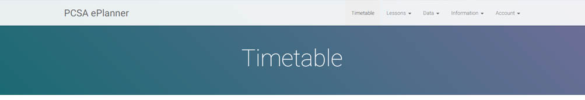
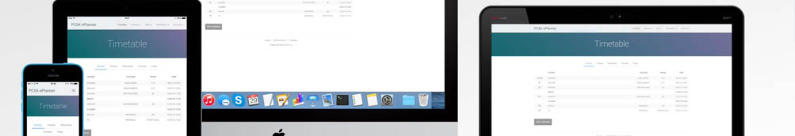

The PCSA ePlanner was a project that I developed in my final years at Priory Community School and into my first year of college. It was a web platform that replaced the paper planners given to students at the school, the idea being that it would not only reduce the yearly costs of buying the paper planners for all students, but that it would increase useage as the students would be more likely to use an app on their phones than a physical binder.
The system allowed multiple levels of access through accounts for students, teachers, leadership team, admin and parents. Students, staff and parents could sign up with their emails through the site, which would then identify which access level to give them. Confirmation emails were then sent to the user and they were taken through an account setup process.
It was important to make sure parents were properly verified before being able to view a student's information, so a process of verification by the student's tutor was set up. Only verified parents could access their child's data, being verified by a permission slip that required the same email on the account to be used.
I created an early proof of concept of the project to present to the leadership team at the school who consequently backed the continuation of it through the full release we carried out. I was the sole developer on the project and worked on it on and off over the span of around three years. This included not only developing the site, but promoting it through advertisments in the school and presentations to staff and students.
The site allowed students to view timetables, behaviour points, improvement feedback (carried out by teachers) and more. It also featured a social system where users could create posts that other users could view and comment on, intended for homework help - of course with a heavy censoring and filtering system!
The project was developed in PHP and JavaScript, with AJAX inputs providing a fluid user experience. Not only was the site accessible on desktop and mobile through the responsively designed website, but it was also able to be downloaded from the iOS App Store. I created the iOS app in Swift and published it through the school's exisiting Apple Developer account.
In the full release, we allowed a full year group (~200 students) to use the platform for a year rather than the paper planner system. It was a resounding success with very positive feedback from students and staff, however the school ultimately decided against the system due to the impact of promoting the use of smartphones in the classroom.
A re-host of the site can be found below, accessable via the login of "DEMO_USER" and "DEMO_PASSWORD". This is a student login so all student features are available to you. The account has already gone through the setup steps.